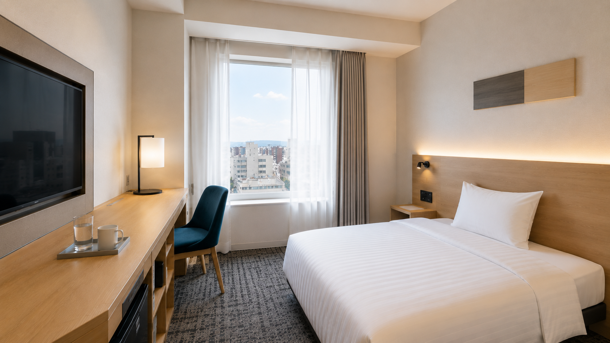
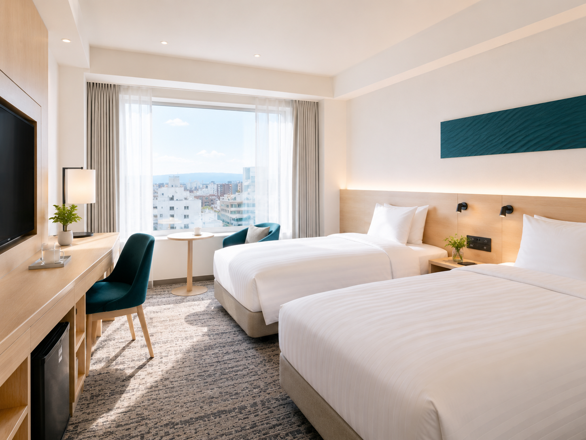
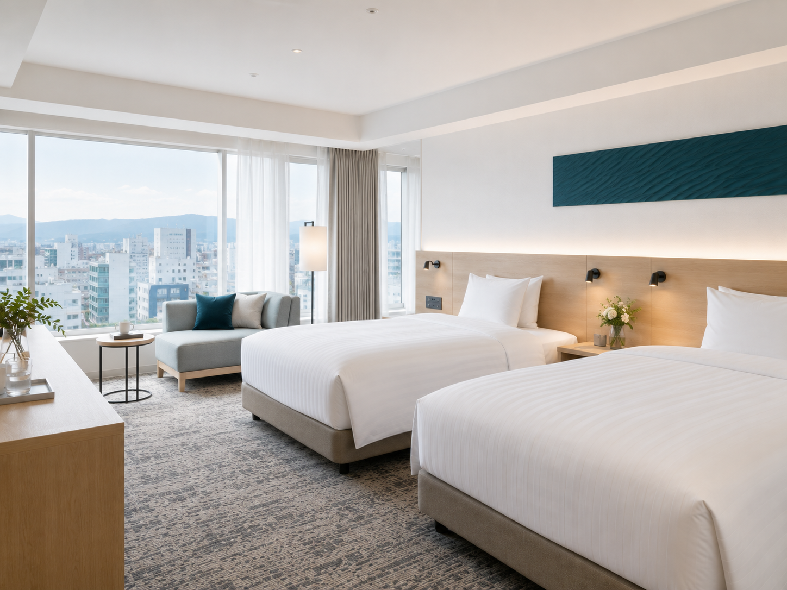
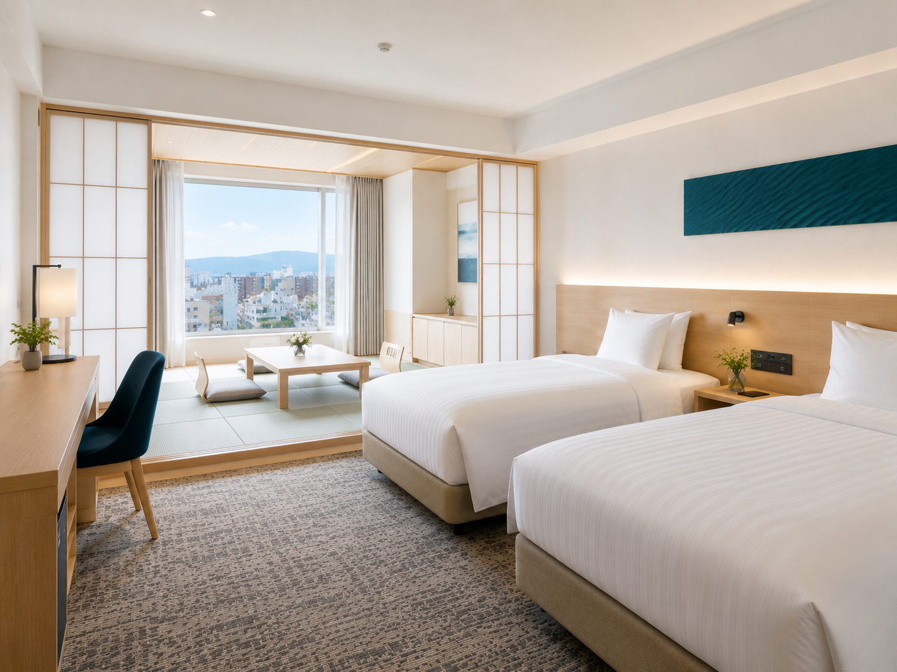
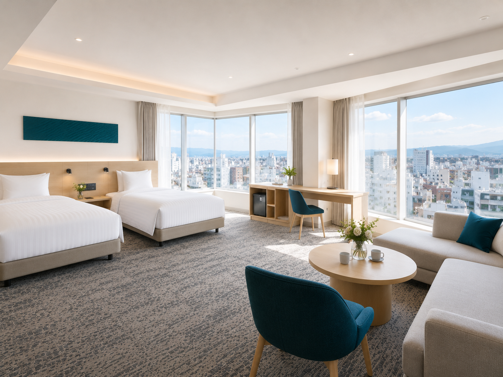
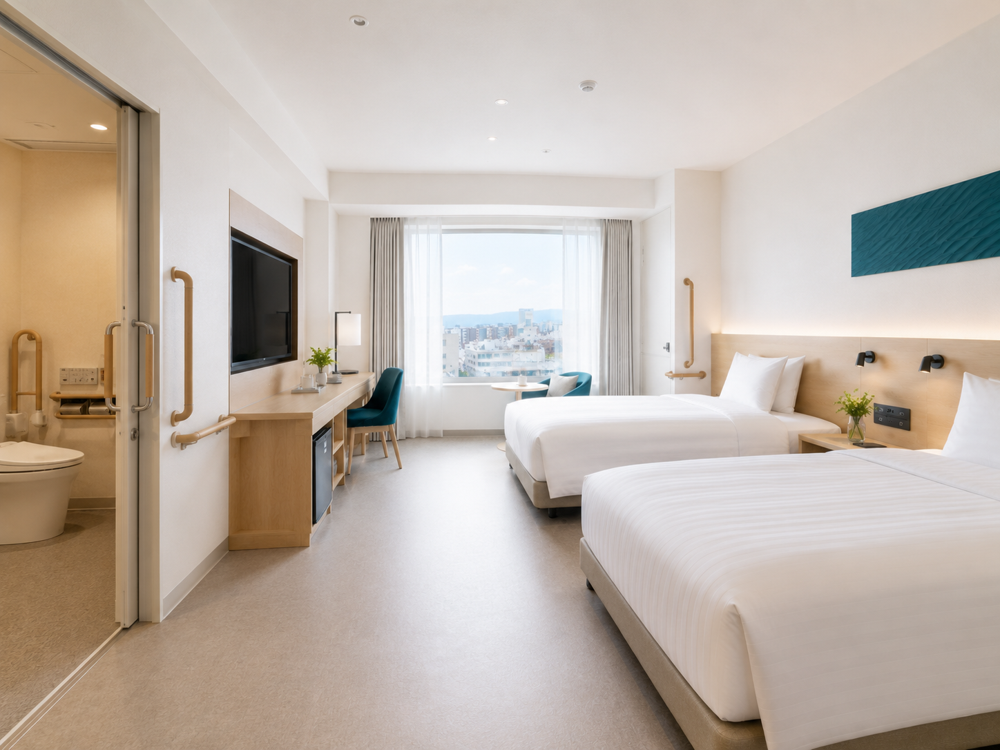
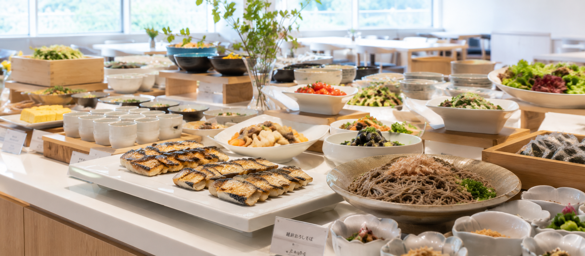
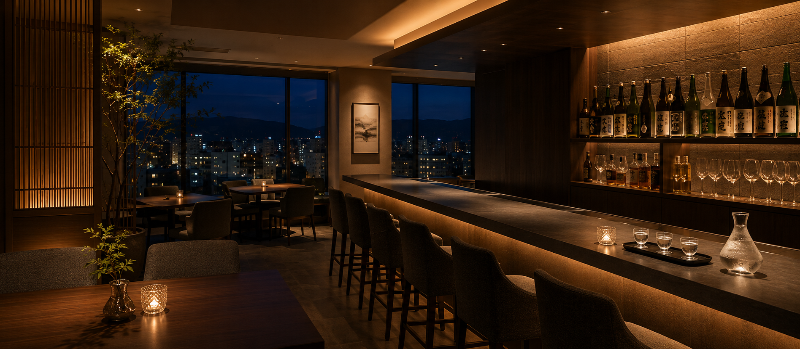

スタンダードシングル
16㎡出張やひとり旅に。広めのデスクと快適なベッドで、仕事も休息も。
9,800円〜
Concept
新幹線でぐっと近くなった福井。けれど見どころは街なかから少し離れています。コモレ福井は、駅前という立地そのものを強みに、県内のどこへ向かうにも便利な拠点として設計しました。朝は越前の食ではじまり、夜は街に出て、館内でくつろぐ。滞在のリズムは、お客様のものです。
福井駅西口から徒歩3分。荷物を置いて身軽に観光へ。戻れば落ち着く客室が待っています。県内主要スポットへの起点に。
地元食材を活かした朝食ビュッフェと、夜遅くまで開く小皿ダイニング。福井で「食べそびれた」がなくなります。
白を基調とした全50室。高速Wi-Fiと使いやすいデスクで、観光にも出張にも気持ちよく過ごせます。
As a Base
主要観光地までの目安です。チェックイン前後の荷物預かりや、周辺のレンタカー・バス情報のご案内も承ります。
Rooms
ひとり旅・出張から、ご家族での滞在まで。5つのタイプからお選びいただけます。料金は1室1泊あたりの目安です（税込）。

出張やひとり旅に。広めのデスクと快適なベッドで、仕事も休息も。

ふたりでゆったり。観光の拠点にちょうどいい標準ツイン。

ソファを備えた上層階。福井の街並みを見下ろしながら。

畳とベッドのよさを併せ持つ。家族やグループの滞在に。

角部屋の開放感。記念日や特別な滞在に応える最上位タイプ。

段差を抑えた設計と広めの水まわり。バリアフリーで安心して。
Dining

越前そば、焼き魚、地元の旬菜。福井の食材を集めたビュッフェで、朝の一日をはじめてください。和洋どちらもご用意しています。

福井は夜が早い街。だからこそ、宿で味わう一皿と一杯を用意しました。地酒、越前の肴を、遅い時間までゆったりと。チェックイン後の軽い夕食にも。
Facilities
最上階の大浴場で一日の疲れを。観光や出張の後にゆったりと。
コーヒーと福井の地域誌を置いた、待ち合わせや休憩のスペース。
Wi-Fi完備の共用デスク。簡単な打ち合わせや作業に。
滞在中も体を動かせる小規模ジム（宿泊者無料）。
連泊や長期滞在に便利な洗濯乾燥機を設置。
近隣に提携駐車場をご用意。事前にお問い合わせください。
Access
ご希望の日程と人数を入れるだけ。空室と料金の目安をその場で確認できます。